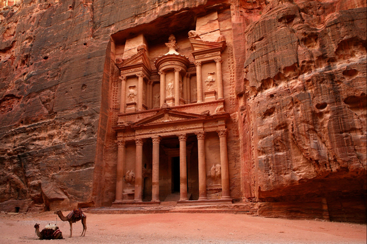

◀ Retour à la page principale.
Les merveilles de l'Asie:
Veuillez choisir une image parmi les images ci-dessous pour commencer la diapositive:

×
1 / 8
2 / 8
3 / 8
4 / 8
5 / 8
6 / 8
7 / 8
8 / 8
❮
❯
Pètra:
Avant c'était une ville prospère, aussi la capitale de l'empire nabatéen, qui se situe au milieu des montagnes du désert, dans l'actuel sud-ouest du Royaume hachémite de Jordanie.">